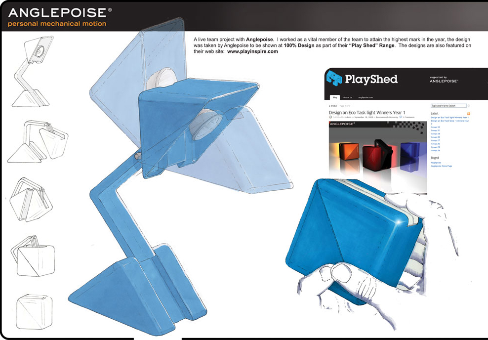
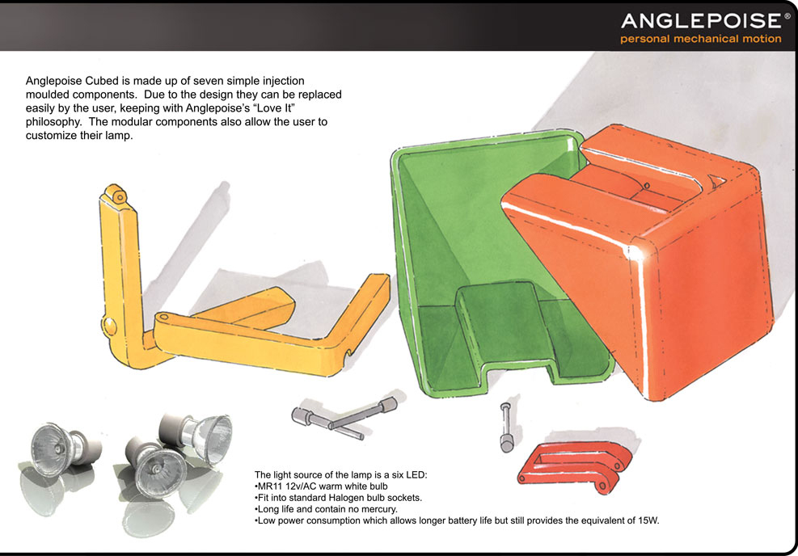

The lamp folds in to a cube for students who are regularly moving house. We uncovered that this was an untapped market because many students did “not bother with lamps” because they often broke in the move.
As a team we were given a very open brief, we identified and defined our own problem through design research techniques. Designing so that the lamp folded in to a complete Cube was a geometric challenge that we solved iteratively as a team through many different paper/cardboard prototypes, a final prototype was made as a proof of concept. Anglepoise has retained ownership of the design for future comersialisation.

